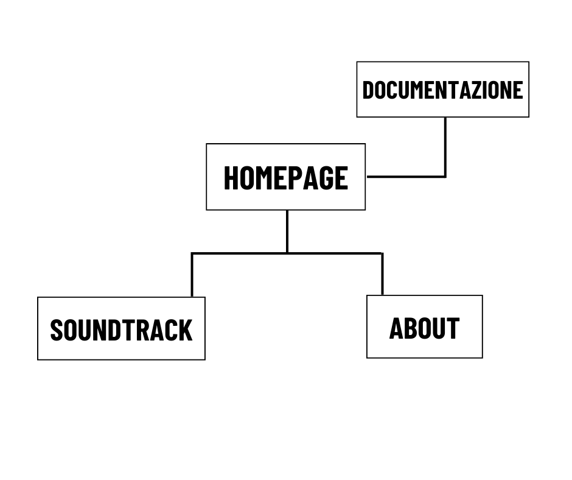

Il sito vuole condividere e approfondire la conoscenza del videogioco Far Cry 3 Blood Dragon, espansione standalone di Far Cry 3, attraverso un focus sulla colonna sonora originale dedicata.
La soundtrack ha un ruolo centrale nel conferire al titolo il suo carattere rievocativo ed è pertanto disseminata di citazioni a classici degli anni 80.
Consultando il sito, l’utente può divertirsi cogliendo i rimandi presenti nella colonna sonora confrontandola con i brani dei cult che l’hanno ispirata.
Oltre a risultare particolarmente coinvolgente, l’OST di FC Blood dragon permette ai giocatori più giovani di scoprire le opere che hanno segnato una generazione.
Approfondire la conoscenza della soundtrack del videogioco esplicitando i brani dei cult a cui si ispira.
Parallelamente, far conoscere alle nuove generazioni il videogioco attraverso la sua colonna sonora e le colonne sonore dei film anni 80 a cui si ispira.
Giovani adulti dai 20 ai 30 anni che conoscono e/o hanno giocato al gioco.
Wikipedia: la pagina inglese dedicata al videogioco parla esclusivamente di come la grafica e il mood del gioco si ispirino ai film d’azione e all’aesthetic waporwave degli anni 80, senza approfondire adeguatamente la soundtrack del gioco, anch’essa creata ispirandosi a quell’epoca. La pagina italiana contiene meno informazioni di quella inglese.
YouTube: dove la soundtrack è stata ovviamente caricata sia da Ubisoft che da utenti generici ma le reference alle colonne sonore dei film anni 80 sono presenti solo a discrezione di coloro che decidono di commentare e, se presenti, non forniscono un link diretto alla canzone a cui fanno riferimento.
Fandom.com, nello specifico la sezione “Far Cry Wiki”: menziona l’ovvio stile anni 80 del gioco, menzionando i film alla quale si ispira, ma senza spiegare come questo valga anche per la musica e non solo per i personaggi e per la grafica.

Il sito non presenta immagini del videogioco poiché coperte da copyright; per ovviare a questa mancanza ho deciso di ricreare il design del menu di gioco nel menu di navigazione e nella presente pagina di documentazione sia per quanto riguarda i colori - grigio scuro #0B0B0B e verde acqua #54F8AE - sia nel font, usandone uno simile ma gratuito, ossia Barlow Condensed (sans-serif).
Per la stessa ragione e per coerenza, ho inserito come sfondo delle pagine di soundtrack e about due grafiche in stile vaporwave, emulando quanto più fedelmente il title screen del gioco.
L’effetto neon (di colore viola, simile a quello usato nella locandina del gioco) e il font Audiowide (sans-serif) del titolo principale nella homepage vogliono richiamare sia le arcade che l’ambientazione del gioco.
Il font Barlow Condensed (sans-serif) è stato usato in tutto il sito per mantenere un design minimale e ordinato.
HTML e CSS.
Visual Studio Code, Bootstrap (card nella homepage), Fontawesome (icone), Google Fonts, Google Analitycs (views), Github (pubblicazione), Canva (wireframe, architettura sito e disegni nelle card), Youtube (link delle canzoni), Freepik (sfondi) e Photoshop (modifiche ai disegni nelle card).
Nel 2013 Far Cry 3 Blood Dragon ha fatto ciò che 5 anni dopo avrebbe fatto Stranger Things: rivisitare l’estetica e le “vibe” anni 80 (la serie tv le ha infine rese un fenomeno mainstream). È proprio giocando a questo gioco che mi sono interessata alla cultura e agli audiovisivi di quegli anni, e guardando questi ultimi ho notato come la soundtrack del videogioco si sia ispirata alle loro colonne sonore, oltre che ai loro personaggi e alle loro tematiche. Il sito racchiude dunque la mia ricerca volta a esplicitare tali rimandi (assenti nelle pagine Wikipedia dedicate al videogioco e non direttamente consultabili nella sezione commenti di YouTube) rendendola disponibile a chiunque, soprattutto a coloro che giocando al videogioco o riascoltando la soundtrack su YouTube si sono chiesti “questa traccia mi ricorda il brano di un certo film, ma quale?”.
Sulla base del target audience e del carattere informativo/conoscitivo del sito, il social migliore per poter promuovere quest’ultimo e i suoi contenuti è Instagram. Per questo gli obiettivi prefissati per il sito sono: raggiungere 50 views del sito e 25 follower sulla pagina Instagram.
Il target principale sono i giovani-adulti dai 20 ai 30 anni che conoscono e/o hanno giocato al gioco.
A questi si aggiungono gli adolescenti dai 14 ai 19, i quali potrebbero non essere a conoscenza dell’esistenza del videogioco e della sua soundtrack ineccepibile.
Gli utenti possono quindi approfondire la conoscenza della soundtrack del videogioco oppure scoprire l’esistenza del videogioco - capendo subito l’importanza della sua soundtrack in virtù del suo valore evocativo – e di diversi film che sono diventati le fondamenta dei generi cinematografici sci-fi e azione.
Intendo promuovere il sito tramite una pagina Instagram dedicata e inviando la URL a vari gruppi e contatti su WhatsApp.
In data 19/09/2023 ho raggiunto e superato con successo gli obiettivi prefissati: 50 views del sito e 25 follower sulla pagina Instagram.